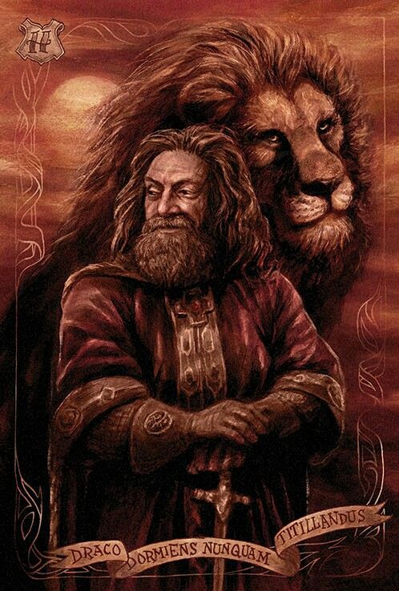
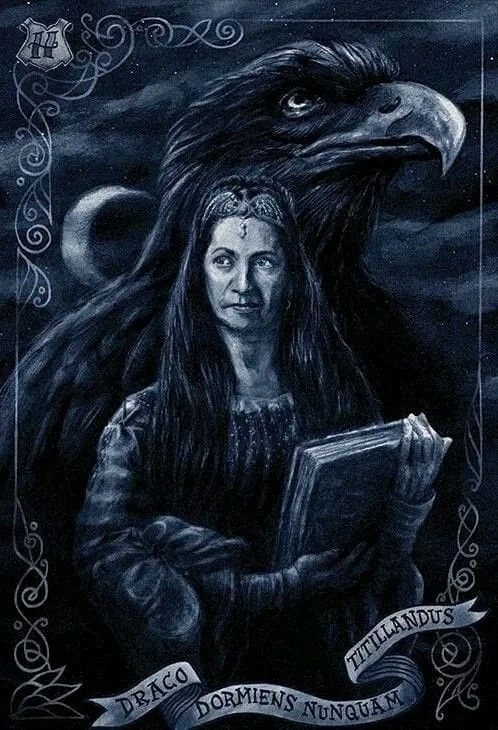
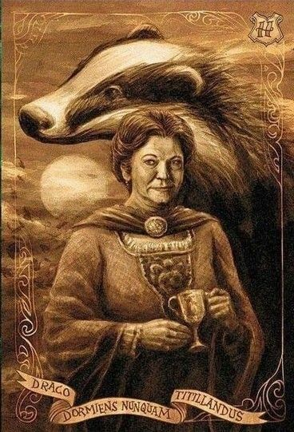
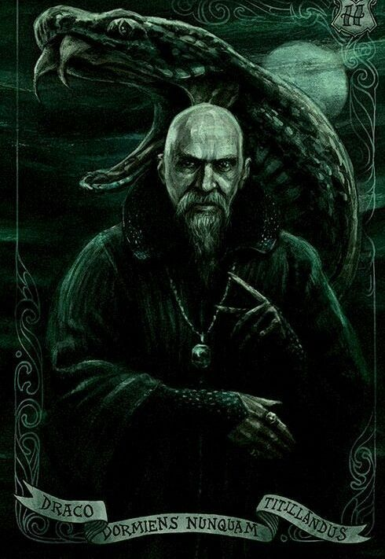

Fundada por Godric Gryffindor, a Grifinória é a casa que valoriza a coragem, bravura, determinação e nobreza. Seu símbolo é o leão, suas cores são o vermelho e o dourado e o seu elemento é o fogo.
Embora sejam frequentemente vistos como os grandes heróis, a impulsividade e teimosia dos membros pode levá-los a agir de forma imprudente.
Diretora da casa: Professora Minerva McGonagall

Fundada por Rowena Ravenclaw, a Corvinal valoriza a inteligência, o conhecimento, a criatividade e a sabedoria. Seus alunos são conhecidos por pensar "fora da caixa" e valorizar o aprendizado.
Suas cores são o azul e o prata, e o animal símbolo é uma águia.
"O espírito sem limites é o maior tesouro do homem."
Diretor da casa: Professor Fílio Flitwick

Fundada por Helga Hufflepuff, a Lufa-Lufa é conhecida por ser a casa mais inclusiva, valorizando a lealdade, a paciência, o jogo limpo e o trabalho árduo em vez de uma aptidão específica.
Suas cores são o amarelo e o preto, e o animal símbolo é um Texugo.
Os membros possuem um forte código de moral e um senso de certo e errado.
Diretora da casa: Professora Pomona Sprout

Fundada por Salazar Slytherin, a Sonserina destaca alunos ambiciosos, astutos e determinados, frequentemente dotados de grande liderança. Suas cores são o verde e o prata, e o animal símbolo é a serpente.
Os membros desta casa são conhecidos por não medir esforços para alcançar seus objetivos.
A Sonserina ficou historicamente marcada por abrigar bruxos que seguiram as Artes das Trevas. No entanto, a mesma também revelou grandes heróis
Diretor da casa: Professor Severus Snape
